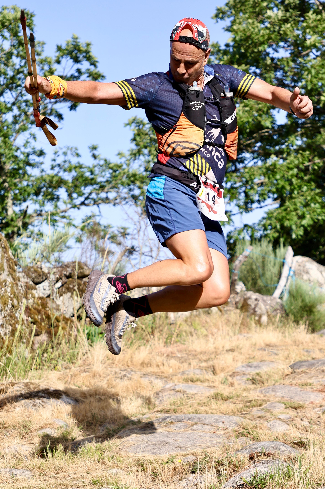
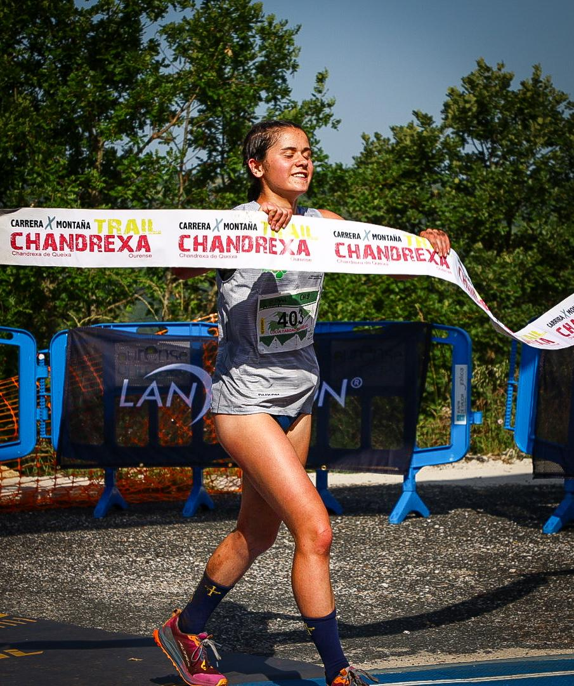

Club Running Sport Trail staged the 14th edition of the Chandrexa Trail in Chandrexa de Queixa, in Galicia's Ourense province, on Sunday 21 June 2026, with event coverage by the Image Media team. The race counts toward the Copa Gallega por Montaña (Galician Mountain Running Cup) and is organised with the support of the Diputación de Ourense and the Concello de Chandrexa de Queixa.

A heat alert issued by the Xunta de Galicia forced organisers to adapt the long race on the day, moving the start forward by an hour and cutting the distance from 35 to 23 kilometres, with a 12:00 cut-off for any runner still on course. An 18-kilometre short race went ahead as planned. More than 250 athletes took part across both distances, with organisers crediting more than 85 volunteers and staff for the smooth running of the 14th edition.

In the 23-kilometre long race, Ourense locals Adrián Rodríguez (Running Sport) and Antía Goberna (Asesou) were the fastest men's and women's finishers, in 2:21:06 and 3:04:55 respectively. Daniel Domínguez (Castelos Trail) and Marcos Antonio Pascual (Castro Trail) completed the men's podium, while Paula María Cobelo (Pulpeiros Mugardos) and Patricia Kaiser (RunManiak) rounded out the women's podium. In the 18-kilometre short race, Abel Franco (Running Sport) and Nuria Novoa (Traileros Toxos e Birras) took the wins, ahead of Édgar Castelo (Vértice) and Francisco Pascual (Castro Trail) for the men, and Marta Rivera and Cristina Vázquez (Cabo de Penas) for the women.
Event coverage at Chandrexa Trail was provided by the Image Media team, comprised of Eduardo Castro and Sergio Mendes.